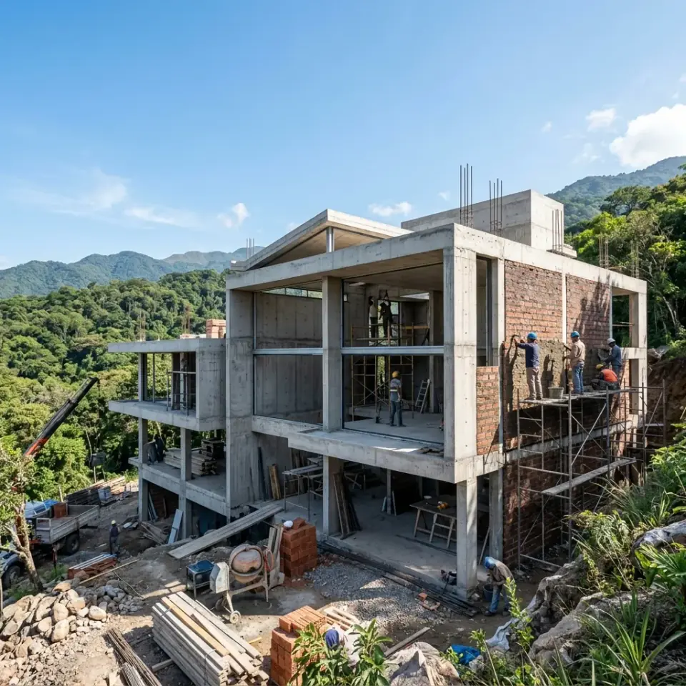

Construcción de Casas en Yerba Buena
Llave en Mano & Steel Framing de Alto Rendimiento Térmico para el Piedemonte
Diseñamos y construimos residencias de categoría adaptadas a las exigencias topográficas, climáticas y normativas de Yerba Buena. Gestionamos íntegramente los reglamentos internos de copropiedad en countries privados y los permisos de obra ante la Municipalidad de Yerba Buena.

Yerba Buena, Las Yungas, Marcos Paz y San Pablo
Sistemas Steel Framing e Industrializado Tradicional
¿Por qué construir en Yerba Buena con Constructora ByB?
Constructora ByB SRL es la empresa de referencia para proyectos residenciales en el municipio de Yerba Buena, Tucumán. Nuestro equipo multidisciplinario (arquitectos, ingenieros calculistas y directores de obra matriculados) gestiona todas las etapas: desde el análisis geotécnico del suelo de piedemonte y el diseño bioclimático adaptado a las Yungas, hasta el visado del anteproyecto ante los Comités de Arquitectura de countries y la tramitación del permiso de edificación en la Dirección de Obras Privadas de Yerba Buena.
Construcción en Barrios Privados y Countries de Yerba Buena
Conocemos con precisión milimétrica los reglamentos de copropiedad y las restricciones de construcción en los desarrollos residenciales más exclusivos del oeste tucumano.
Country Jockey Club
Ejecución de obras de gran envergadura respetando rigurosamente los retiros perimetrales, alturas cumbrera y normas de seguridad en ingresos de contratistas y acopio.
- check_circle Planos visados por comisión interna
- check_circle Cierres de obra y seguridad laboral
Las Yungas Country Club
Proyectos arquitectónicos adaptados a topografías con pronunciadas pendientes, terrazas aterrazadas y cálculo estructural especial para suelo de ladera.
- check_circle Muros de contención y desagües pluviales
- check_circle Vistas panorámicas hacia el cerro
Country Marcos Paz
Casas modernas de diseño contemporáneo, líneas rectas, amplios ventanales DVH de alta eficiencia y quinchos integrados con piscinas climatizadas.
- check_circle Aprobaciones expeditivas
- check_circle Terminaciones premium en microcemento y madera
El Tipal & La Arbolada
Integración paisajística con vegetación autóctona de las yungas. Tratamiento de aguas, preservación de arbolado nativo y aislación acústica profunda.
- check_circle Eficiencia energética sustentable
- check_circle Aislación termoacústica reforzada
San Pablo & Zona Sur
Proyectos residenciales en barrios cerrados en expansión del eje Yerba Buena - San Pablo con rápidos accesos viales y entornos naturales.
- check_circle Obras llave en mano con entrega precisa
- check_circle Planes de financiación por etapas
Barrios Abiertos y Lotes Particulares
Construcción en zonas tradicionales de Yerba Buena (Av. Aconquija, Av. Perón, Marcos Paz). Proyectos familiares, ampliaciones y casas unifamiliares con seguridad perimetral.
- check_circle Permiso municipal directo
- check_circle Conexión de servicios domiciliarios
Adaptación Bioclimática al Piedemonte de Yerba Buena
El clima de Yerba Buena no es igual al del centro de San Miguel de Tucumán. La mayor cercanía a la sierra genera precipitaciones más abundantes en verano, mayor humedad relativa y noches más frescas. Nuestro método constructivo contempla:
Barreras Hidrófugas y Drenajes Pluviales
Cálculo de pendientes en cubiertas, zinguería de gran caudal y zapatas corridas aisladas contra humedad ascendente.
Aislación Térmica de Alto Rendimiento
Paredes exteriores con lana de vidrio de 70mm o EPS de 50mm y ventanas con doble vidriado hermético (DVH) para reducir en un 50% el consumo eléctrico en aire acondicionado y calefacción.
Ventilación Cruzada e Iluminación Natural
Orientación solar estratégica (eje norte-sur) para maximizar la luz solar en invierno y proteger galerías en verano.
¿Steel Framing o Tradicional para Yerba Buena?
- ⚡ 60% más rápido en entrega.
- 🛡️ Aislación térmica superior para el cerro.
- 🧹 Obra limpia, ideal para countries con límites de acopio.
- 📐 Precisión milimétrica antisísmica.
- 🧱 Ladrillo cerámico o macizo visto.
- 🏛️ Gran inercia térmica tradicional.
- 🔨 Flexibilidad para modificaciones en obra.
- 💎 Sólido valor de reventa en el mercado local.
Tu Casa en Yerba Buena Llave en Mano: Paso a Paso
Nos encargamos del 100% de la gestión técnica, legal y constructiva para que disfrutes ver crecer tu hogar.
Visita al Lote
Relevamiento topográfico, orientación solar y cotas del terreno en Yerba Buena.
Diseño y Render 3D
Planos de distribución a medida y recorridos 3D realistas de cada ambiente.
Permisos & Visados
Aprobación en comisión del country y permiso municipal en Yerba Buena.
Ejecución de Obra
Construcción bajo dirección técnica profesional continua y reportes semanales.
Entrega Llave en Mano
Tu casa lista para mudarte con garantía contractual y planos conforme a obra.
Preguntas Frecuentes sobre Construcción en Yerba Buena
Todo lo que necesitás saber antes de iniciar tu proyecto en countries o zonas urbanas de Yerba Buena.
¿Tenés un terreno en Yerba Buena y querés construir?
Contactanos hoy mismo para coordinar una reunión técnica con nuestros arquitectos y recibir un presupuesto detallado sin cargo.